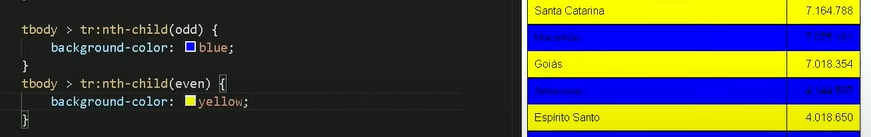

Efeito zebrado
O efeito zebrabdo é aquela formatação nas linhas da tabela, uma linha tem cor outra não, dando efeito de "cor sim, cor não"
Para o efeito vamos usa uma pseudo classe, :nth-child(2n), esse dois que está dentro dela é para indica quantas linhas queremos que pule no efeito, se colocar mais pula mais, faça testes.
exemplo: tbody >tr:nth-child(2n){parametros de cor} O "tbody" é o conteudo da tabela onde queremos o efeito, com isso só afeta nossa contéudo, "tr" são as linhas para que o efeito aplique nas linahs da tabela, e ":nth-child(valor n)" é a pesseudo classe que faz o efeito zebrabrado
podemos fazer o efeito zebrado com duas cores, com isso precismos declarar tbody >tr:nth-child(odd){parametros de cor} para cores ipar e tbody >tr:nth-child(even){parametros de cor} para as cores pares, mas da pra fazer varias declrações deixando o par e o inpar com fontes diferentes e cores da letra também, basta apenas declarar dentro da pesseudo classe que vai receber o parametrê da mudança
Congelamento de linha
Precisamos colocar dentro da table{posotion:relative;} Depois devemos mostrar o caminho da linha que vai ser fixada, thead > tr > th{position:stick; top:-1px; background-color: cor que já estava antes no cabeçalho}